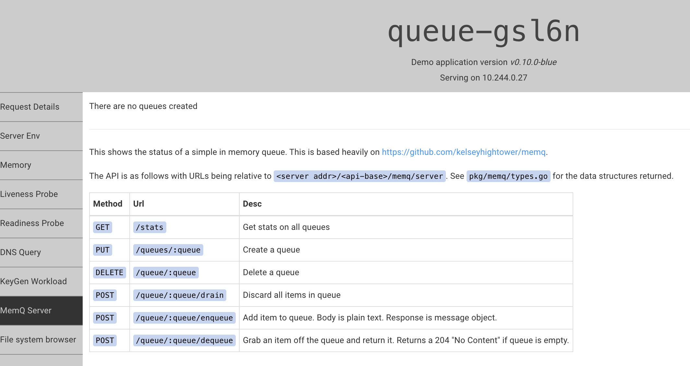
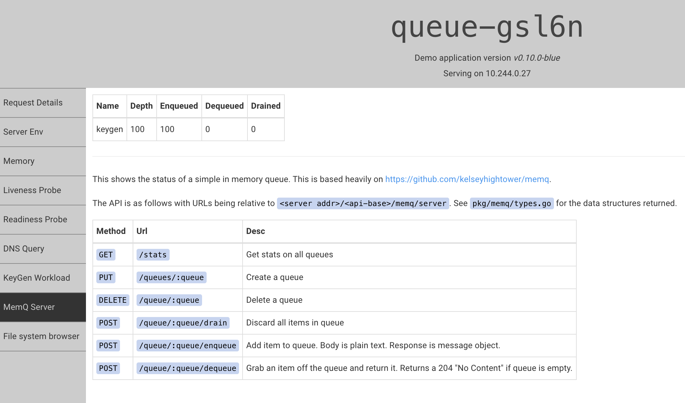

12장 job
만들어진 목적
단기간의 일회성 작업을 실행하기 위해
종료 코드에 상관없이 지속적으로 재시작하는 일반 pod와는 달리 종료코드 0으로 끝나면 재시작 되지 않음
job 객체
잡 명세 템플릿에 정의된 파드를 생성 및 관리
잡이 종료코드 0으로 끝나지 않는 경우 파드 템를릿을 기반으로 새로운 pod 생성
apiVersion: batch/v1
kind: Job
metadata:
name: oneshot
spec:
template:
spec:
containers:
- name: kuard
image: gcr.io/kuar-demo/kuard-amd64:blue
imagePullPolicy: Always
command:
- "/kuard"
args:
- "--keygen-enable"
- "--keygen-exit-on-complete" # 성공시 종료
- "--keygen-num-to-gen=10"
restartPolicy: OnFailure # 실패시 job 객체 생성
job pattern
각 잡은 졸료코드 0으로 끝날 때까지 단일 파드를 2번 실행함
작업 패턴은 작업 완료 수와 병렬로 실행할 파드 수로 정의됨
작업 패턴
원샷: 파드가 성공적으로 종료될 때까지 단일 파드를 한 번 실행하는 방법을 제공
병렬 고정 완료: 여러 일을 여러 pods에서 처리함, 한번에 뜨는 pod의 개수가 제한됨(재활용이 아니라는 사실에 유의)
작업 대기열: 하나의 큰 객체의 일을 여러 pods에서 병렬로 처리함
원 샷
apiVersion: batch/v1
kind: Job
metadata:
name: oneshot
spec:
template:
spec:
containers:
- name: kuard
image: gcr.io/kuar-demo/kuard-amd64:blue
imagePullPolicy: Always
command:
- "/kuard"
args:
- "--keygen-enable"
- "--keygen-exit-on-complete"
- "--keygen-num-to-gen=10"
restartPolicy: OnFailure
Name: oneshot
Namespace: default
Selector: batch.kubernetes.io/controller-uid=ed8954e5-b567-4227-a0cb-b33b0566d35a
Labels: batch.kubernetes.io/controller-uid=ed8954e5-b567-4227-a0cb-b33b0566d35a
batch.kubernetes.io/job-name=oneshot
controller-uid=ed8954e5-b567-4227-a0cb-b33b0566d35a
job-name=oneshot
Annotations: kubectl.kubernetes.io/last-applied-configuration:
{"apiVersion":"batch/v1","kind":"Job","metadata":{"annotations":{},"name":"oneshot","namespace":"default"},"spec":{"template":{"spec":{"co...
Parallelism: 1
Completions: 1
Start Time: Mon, 21 Oct 2024 10:21:05 +0900
Completed At: Mon, 21 Oct 2024 10:21:26 +0900
Duration: 21s
Pods Statuses: 0 Running / 1 Succeeded / 0 Failed
Pod Template:
Labels: batch.kubernetes.io/controller-uid=ed8954e5-b567-4227-a0cb-b33b0566d35a
batch.kubernetes.io/job-name=oneshot
controller-uid=ed8954e5-b567-4227-a0cb-b33b0566d35a
job-name=oneshot
Containers:
kuard:
Image: gcr.io/kuar-demo/kuard-amd64:blue
Port: <none>
Host Port: <none>
Command:
/kuard
Args:
--keygen-enable
--keygen-exit-on-complete
--keygen-num-to-gen=10
Environment: <none>
Mounts: <none>
Volumes: <none>
Events:
Type Reason Age From Message
---- ------ ---- ---- -------
Normal SuccessfulCreate 2m41s job-controller Created pod: oneshot-w4nfr
Normal Completed 2m20s job-controller Job completed
참고
➜ newbie git:(main) ✗ kubectl apply -f job-oneshot.yaml
Warning: kubectl apply should be used on resource created by either kubectl create --save-config or kubectl apply
The Job "oneshot" is invalid: spec.template: Invalid value: core.PodTemplateSpec{ObjectMeta:v1.ObjectMeta{Name:"", GenerateName:"", Namespace:"", SelfLink:"", UID:"", ResourceVersion:"", Generation:0, CreationTimestamp:time.Date(1, time.January, 1, 0, 0, 0, 0, time.UTC), DeletionTimestamp:<nil>, DeletionGracePeriodSeconds:(*int64)(nil), Labels:map[string]string{"batch.kubernetes.io/controller-uid":"54c42c9c-b4ec-43b2-b671-16c4848554ea", "batch.kubernetes.io/job-name":"oneshot", "controller-uid":"54c42c9c-b4ec-43b2-b671-16c4848554ea", "job-name":"oneshot", "run":"oneshot"}, Annotations:map[string]string(nil), OwnerReferences:[]v1.OwnerReference(nil), Finalizers:[]string(nil), ManagedFields:[]v1.ManagedFieldsEntry(nil)}, Spec:core.PodSpec{Volumes:[]core.Volume(nil), InitContainers:[]core.Container(nil), Containers:[]core.Container{core.Container{Name:"kuard", Image:"gcr.io/kuar-demo/kuard-amd64:blue", Command:[]string{"/kuard"}, Args:[]string{"--keygen-enable", "--keygen-exit-on-complete", "--keygen-num-to-gen=10"}, WorkingDir:"", Ports:[]core.ContainerPort(nil), EnvFrom:[]core.EnvFromSource(nil), Env:[]core.EnvVar(nil), Resources:core.ResourceRequirements{Limits:core.ResourceList(nil), Requests:core.ResourceList(nil), Claims:[]core.ResourceClaim(nil)}, ResizePolicy:[]core.ContainerResizePolicy(nil), RestartPolicy:(*core.ContainerRestartPolicy)(nil), VolumeMounts:[]core.VolumeMount(nil), VolumeDevices:[]core.VolumeDevice(nil), LivenessProbe:(*core.Probe)(nil), ReadinessProbe:(*core.Probe)(nil), StartupProbe:(*core.Probe)(nil), Lifecycle:(*core.Lifecycle)(nil), TerminationMessagePath:"/dev/termination-log", TerminationMessagePolicy:"File", ImagePullPolicy:"Always", SecurityContext:(*core.SecurityContext)(nil), Stdin:false, StdinOnce:false, TTY:false}, core.Container{Name:"oneshot", Image:"gcr.io/kuar-demo/kuard-amd64:blue", Command:[]string{"/kuard", "--keygen-enable", "--keygen-exit-on-complete", "--keygen-num-to-gen", "10", "-a"}, Args:[]string(nil), WorkingDir:"", Ports:[]core.ContainerPort(nil), EnvFrom:[]core.EnvFromSource(nil), Env:[]core.EnvVar(nil), Resources:core.ResourceRequirements{Limits:core.ResourceList(nil), Requests:core.ResourceList(nil), Claims:[]core.ResourceClaim(nil)}, ResizePolicy:[]core.ContainerResizePolicy(nil), RestartPolicy:(*core.ContainerRestartPolicy)(nil), VolumeMounts:[]core.VolumeMount(nil), VolumeDevices:[]core.VolumeDevice(nil), LivenessProbe:(*core.Probe)(nil), ReadinessProbe:(*core.Probe)(nil), StartupProbe:(*core.Probe)(nil), Lifecycle:(*core.Lifecycle)(nil), TerminationMessagePath:"/dev/termination-log", TerminationMessagePolicy:"File", ImagePullPolicy:"IfNotPresent", SecurityContext:(*core.SecurityContext)(nil), Stdin:true, StdinOnce:true, TTY:false}}, EphemeralContainers:[]core.EphemeralContainer(nil), RestartPolicy:"OnFailure", TerminationGracePeriodSeconds:(*int64)(0x400a9022c8), ActiveDeadlineSeconds:(*int64)(nil), DNSPolicy:"ClusterFirst", NodeSelector:map[string]string(nil), ServiceAccountName:"", AutomountServiceAccountToken:(*bool)(nil), NodeName:"", SecurityContext:(*core.PodSecurityContext)(0x4002089d60), ImagePullSecrets:[]core.LocalObjectReference(nil), Hostname:"", Subdomain:"", SetHostnameAsFQDN:(*bool)(nil), Affinity:(*core.Affinity)(nil), SchedulerName:"default-scheduler", Tolerations:[]core.Toleration(nil), HostAliases:[]core.HostAlias(nil), PriorityClassName:"", Priority:(*int32)(nil), PreemptionPolicy:(*core.PreemptionPolicy)(nil), DNSConfig:(*core.PodDNSConfig)(nil), ReadinessGates:[]core.PodReadinessGate(nil), RuntimeClassName:(*string)(nil), Overhead:core.ResourceList(nil), EnableServiceLinks:(*bool)(nil), TopologySpreadConstraints:[]core.TopologySpreadConstraint(nil), OS:(*core.PodOS)(nil), SchedulingGates:[]core.PodSchedulingGate(nil), ResourceClaims:[]core.PodResourceClaim(nil)}}: field is immutable
원인: 기존 oneshot으로 올렸던 job이 존재하였고 해당 job을 수정하는 것으로 착각 하였기에 발생한 오류
병렬 고정 완료
completions: 끝내야 하는 일의 횟수
parallelism: 동시에 뜰 수 있는 pods의 수
apiVersion: batch/v1
kind: Job
metadata:
name: parallel
labels:
chapter: jobs
spec:
parallelism: 5
completions: 10
template:
metadata:
labels:
chapter: jobs
spec:
containers:
- name: kuard
image: gcr.io/kuar-demo/kuard-amd64:blue
imagePullPolicy: Always
command:
- "/kuard"
args:
- "--keygen-enable"
- "--keygen-exit-on-complete"
- "--keygen-num-to-gen=10"
restartPolicy: OnFailure
➜ newbie git:(main) ✗ kubectl get pods
NAME READY STATUS RESTARTS AGE
oneshot-w4nfr 0/1 Completed 0 6h1m
parallel-2pcxp 0/1 Completed 0 73s
parallel-689g5 0/1 Completed 0 78s
parallel-6sd5s 0/1 Completed 0 75s
parallel-jssqh 0/1 Completed 0 107s
parallel-lllvw 0/1 Completed 0 107s
parallel-n8wcw 0/1 Completed 0 107s
parallel-s7r9j 0/1 Completed 0 76s
parallel-tc6m4 0/1 Completed 0 70s
parallel-xv6sr 0/1 Completed 0 107s
parallel-zz5kw 0/1 Completed 0 107s
총 끝내야 하는 job이 10개이기에 10개의 pod가 만들어진다
작업 대기열
준비물
queue 역할을 할 Pod
apiVersion: apps/v1 kind: ReplicaSet metadata: labels: app: work-queue component: queue chapter: jobs name: queue spec: replicas: 1 selector: matchLabels: app: work-queue component: queue chapter: jobs template: metadata: labels: app: work-queue component: queue chapter: jobs spec: containers: - name: queue image: "gcr.io/kuar-demo/kuard-amd64:blue" imagePullPolicy: Always

해당 pod를 서비스를 사용해 공개
apiVersion: v1 kind: Service metadata: labels: app: work-queue component: queue chapter: jobs name: queue spec: ports: - port: 8080 protocol: TCP targetPort: 8080 selector: app: work-queue component: queue
대기열 적재
# Create a work queue called 'keygen' curl -X PUT localhost:8080/memq/server/queues/keygen # Create 100 work items and load up the queue. for i in work-item-{0..99}; do curl -X POST localhost:8080/memq/server/queues/keygen/enqueue -d "$i" done
내용 확인 
소비 방법 지정(소비자 잡 생성)
apiVersion: batch/v1 kind: Job metadata: labels: app: message-queue component: consumer chapter: jobs name: consumers spec: parallelism: 5 template: metadata: labels: app: message-queue component: consumer chapter: jobs spec: containers: - name: worker image: "gcr.io/kuar-demo/kuard-amd64:blue" imagePullPolicy: Always command: - "/kuard" args: - "--keygen-enable" - "--keygen-exit-on-complete" - "--keygen-memq-server=http://queue:8080/memq/server" - "--keygen-memq-queue=keygen" restartPolicy: OnFailure